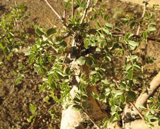
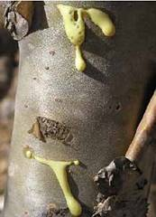
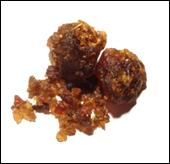

HORT 282 :: Lecture 27 :: GUGGAL

GUGGAL
Commiphora wightii (Arn.) Bhandari syn. Commiphora mukul
Family – Burseraceae
 It is a shrub or small tree reaching upto 3 to 4 m. high. Leaves sessile, alternate, 1-3 foliate. Plants are dimorphic, Flowers small in fascicles. Fruits are ovoid, drupe.
Regional Names
English |
Indian Bedellium |
Bengali |
Guggul |
Gujarati |
Indian Gugguru |
Hindi |
Guggulu, Guggal |
Malayalam |
Gulgulu, Guggalu |
Marathi |
Guggala |
Kannada |
Guggal |
Tamil |
Maishakshi, Gukkal |
Telugu |
Guggal |
Distribution: Found in Karnataka, Rajasthan, Deccan and Gujarat.
Part Used: Olio gum resin
Properties & Uses
The gum is bitter, acrid, astringent, thermogenic, aromatic, expectorant, digestive, anthelmintic, anti-inflammatory, anodyne, antiseptic, nervine tonic, aphrodisiac, alterative, stimulant, liver tonic, antispasmodic, emmenagogue, haemostatic, diuretic, rejuvenating, general tonic, and is useful in gout, scrofula, sciatica, facial paralysis diplegia, cough, asthma, bronchitis, pectoral and hepatic, disorders, otorrhoea, epilepsy, fever, stangury, hemorrhoids, dysmenorrhoea, amenorrhea, wounds and ulcers, cardiac disorders, coronary thrombosis, anemia, stomatopathy, pharyngopathy, spermatorrhoea, diabetes, skin diseases etc.
Cultivation & Propagation
Soil and Climate
It can be cultivated in sandy to silt-loam or rocky soils, poor in inorganic matter but rich in several other minerals. The growth is vigorous in the soils, which have moisture-retaining capacity.
Nursery Raising and Planting
The plants are best raised from stem cuttings of semi-wood (old) branch. Woody stem of one meter in length and l10mm thickness is selected and the cut end is planted in a well-manure nursery bed during June-July. The bed should be given light irrigation periodically. The cuttings initiate sprouting in l0-15 days and grow into green sprout in next 10-12 months. These rooted plants are suitable for planting in the field during next rainy season. The cuttings give 80-94 % sprouting.
Seed germination is very poor (5%) but seedlings produce healthier plants, which withstand high velocity wind.
Thinning and Weeding
 The plantation does not require much weeding and hoeing. But soil around the' bushes should be pulverised twice in a year to increase the growth.
Manure/Fertilizer
Application of 5 kg FYM per plant per year is sufficient.
Irrigation
Requires moderate irrigation. Even limited irrigation during summer, enhances the rate of growth.
Harvesting/Post Harvesting Operation
Plants attain normal height and girth after 8-10 years of growth when they are ready for tapping of the gum by shallow incision on the bark between December and March.

Chemical Constituents
Guggulsterol, Myricyl alcohol, cembrene etc.
Active Constituents
Gum resin shows different pharmacological properties and clinical applications: Astringent, expectorant, aphrodisiac, demulcent, carminative, alterative, antispasmodic, emmengogue, to enrich blood, against snake bite and scorpion sting. Anti fertility effect. Plant has use in Arthritis also.
Yield
Approximately 500-800 g gums are obtained per plant.
Substltutes/Adulterants
Guggal is often adulterated with the oliogum resin of Boswellia serrata or sometimes with resin of pinus sp. However Boswellia gum can be identified with its whitish colour and powdery appearance externally. Pinus resin is stickier and is generally in the form of paste at normal temperature.
**************
- Scientific name of guggal is _____________
- Guggal belongs to the family _____________
- Economic part of guggal _____________
- Chemical constituent of guggal _____________
- Common adulterant used in guggal is _____________
| Download this lecture as PDF here |